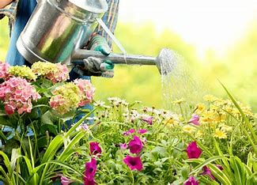

La gestión sostenible del agua en el jardín se refiere a prácticas y técnicas que permiten conservar y utilizar el agua de manera eficiente, minimizando el desperdicio y promoviendo la salud de las plantas y el medio ambiente.
- Selección de plantas adecuadas: Optar por plantas nativas o adaptadas al clima local y resistentes a la sequía puede reducir significativamente la necesidad de riego. Estas plantas están mejor adaptadas a las condiciones naturales de la zona y requieren menos agua para mantenerse saludables.
- Diseño de paisajes sostenibles: Diseñar el paisaje de manera que se minimice la necesidad de riego puede ayudar a conservar el agua. Esto puede incluir la agrupación de plantas con requisitos similares de agua, la instalación de elementos como césped solamente donde sea necesario y la creación de áreas de captación de agua pluvial.

- Uso de técnicas de riego eficientes: Emplear métodos de riego que maximicen la eficiencia del agua, como el riego por goteo o la irrigación con mulch, puede reducir el desperdicio de agua al entregarla directamente a las raíces de las plantas. El riego por goteo, en particular, es altamente eficiente ya que entrega agua de manera lenta y precisa, minimizando la evaporación y el escurrimiento.
- Captación y uso de agua de lluvia: Instalar sistemas de captación de agua de lluvia, como barriles o cisternas, permite recolectar y almacenar agua para su uso en el riego del jardín. Esta agua puede ser utilizada durante períodos de sequía o para regar plantas que requieren una mayor cantidad de humedad.
- Mantenimiento adecuado del suelo: Mantener el suelo sano y bien estructurado puede mejorar su capacidad para retener agua y reducir la necesidad de riego. Agregar materia orgánica al suelo, como compost, puede mejorar su estructura y capacidad de retención de agua, reduciendo así la frecuencia de riego.
- Monitoreo del riego: Es importante monitorear el riego para asegurarse de que las plantas reciban la cantidad adecuada de agua sin desperdiciarla. Esto puede implicar ajustar la frecuencia y la duración del riego según las condiciones climáticas y las necesidades específicas de las plantas.